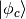
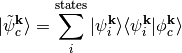
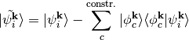
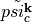

Linear expansion DeltaSCF DFT calculations - Constraining projected reference orbitals¶
Basics¶
For molecules adsorbed at surfaces,  SCF calculations become challenging,
simply because of the large number of states. Not only is it difficult to identify the
correct state, often hybridization spreads adsorbate molecular orbitals across a large
number of substrate bands. A more realistic excitation constraint would be to project
on a gasphase molecular orbital and subsequently enforce occupation of this state.
SCF calculations become challenging,
simply because of the large number of states. Not only is it difficult to identify the
correct state, often hybridization spreads adsorbate molecular orbitals across a large
number of substrate bands. A more realistic excitation constraint would be to project
on a gasphase molecular orbital and subsequently enforce occupation of this state.
This idea is referred to as linear expansion SCF and has first been
proposed by Gavnholt et al. Phys. Rev. B 78, 075441 (2008).
The here presented implementation is described in J. Chem. Phys. 139, 014708 (2013). Herein, we constrain the occupation of a so-called resonance state built from a linear combination of Kohn-Sham states instead of a single KS state. We expand an abitrary reference state  in the space of Kohn-Sham states as follows:

At the same time we orthogonalize the remaining KS states

After an additional orthonormalization of all states we have constructed a resonance state  and removed all its contributions from all other states. We can now constrain the occupation of this state with the effect of describing an excitation of a specific molecular orbital. This is done in every SCF step until the calculation is converged.
For the le SCF calculation, we have to add following keyword to <seed>.param
%BLOCK DEVEL_CODE
DeltaSCF
%ENDBLOCK DEVEL_CODE
and add following keyword to <seed>.deltascf
deltascf_mode : 3
Keywords allowed in <seed>.deltascf¶
In the .deltascf file, the keyword title plus colon takes exactly 23 columns (A20,3X). The keyword content starts after that. Lines with ‘#’ are ignored.
- WARNING
- The number of blanks between the keywords does count!! The best thing is to copy and modify the example from the manual.
| keyword | multiple appearance | arguments and FORTRAN format |
|---|---|---|
| deltascf_iprint | No | <integer I> |
| deltascf_file | No | <string> |
| deltascf_constraint | Yes | <#state I5>1X<occ. F8.4>1X<spin I4> |
| overlap_cutoff | No | <float F8.4>, default: 0.01 |
| deltascf_mixing | No | <float F8.4>, default: mix_charge_amp |
Example .deltascf file:
deltascf_mode : 1
deltascf_file : bla.check
deltascf_iprint : 1
# mode 3 constraints ##
# band occ spin
deltascf_constraint : 35 1.0000 1
overlap_cutoff : 0.01
In this example, we take state 35 from wavefunction file bla.check and enforce an occupation of 1.00 electrons. In this runmode we do not have to pick constraints that yield a net change in charge equal to 0. Charge neutrality will be satisfied by modifying the Fermi level accordingly. However, this is only strictly sensible for metallic systems.
Example 2: Electronic excitations of NO on Ni(001)¶
ATTENTION: These calculations are done using standard on-the-fly pseudopotentials from CASTEP-6.0.1
For this example we calculate a charge neutral HOMO->LUMO excitation and a charge transfer excitation between a nickel substrate and a NO molecule
In the following, the required input files are:
no-on-ni001.param, no-on-ni001.cell, no-on-ni001.deltascf, gasphase.cell, gasphase.param, gasphase.check
no-on-ni001.param
#%BLOCK DEVEL_CODE
#DeltaSCF
#%ENDBLOCK DEVEL_CODE
#reuse: default
task: SinglePoint
spin_polarized : True
cut_off_energy : 400.0
elec_energy_tol : 1e-07
fix_occupancy : False
iprint : 1
max_scf_cycles : 200
metals_method : dm
mixing_scheme : Pulay
mix_history_length : 7
nextra_bands : 50
num_dump_cycles : 0
opt_strategy_bias : 3
smearing_scheme : Gaussian
smearing_width : 0.15
xc_functional : RPBE
no-on-ni001.cell
%BLOCK LATTICE_CART
3.5240000000 0.0000000000 0.0000000000
0.0000000000 3.5240000000 0.0000000000
0.0000000000 0.0000000000 23.0000000000
%ENDBLOCK LATTICE_CART
%BLOCK POSITIONS_ABS
Ni 1.762000 0.000000 1.762000
Ni 0.000000 1.762000 1.762000
Ni 0.000000 0.000000 3.524000
Ni 1.762000 1.762000 3.524000
Ni 1.762000 0.000000 5.286000
Ni 0.000000 1.762000 5.286000
N 1.7620 0.0000 7.0196
O 1.7620 -0.0000 8.1902
%ENDBLOCK POSITIONS_ABS
%BLOCK IONIC_CONSTRAINTS
1 Ni 1 1 0 0
2 Ni 1 0 1 0
3 Ni 1 0 0 1
4 Ni 2 1 0 0
5 Ni 2 0 1 0
6 Ni 2 0 0 1
7 Ni 3 1 0 0
8 Ni 3 0 1 0
9 Ni 3 0 0 1
10 Ni 4 1 0 0
11 Ni 4 0 1 0
12 Ni 4 0 0 1
13 Ni 5 1 0 0
14 Ni 5 0 1 0
15 Ni 5 0 0 1
16 Ni 6 1 0 0
17 Ni 6 0 1 0
18 Ni 6 0 0 1
%ENDBLOCK IONIC_CONSTRAINTS
FIX_ALL_CELL : True
KPOINTS_MP_GRID : 2 2 1
KPOINTS_MP_OFFSET : 0.25 0.25 0.25
no-on-ni001.deltascf
deltascf_file : gasphase.check
deltascf_iprint : 1
deltascf_mode : 3
deltascf_constraint : 5 0.0000 1
deltascf_constraint : 6 1.0000 2
gasphase.cell
%BLOCK LATTICE_CART
3.5240000000 0.0000000000 0.0000000000
0.0000000000 3.5240000000 0.0000000000
0.0000000000 0.0000000000 23.0000000000
%ENDBLOCK LATTICE_CART
%BLOCK POSITIONS_ABS
N 1.7620 0.0000 7.0196
O 1.7620 -0.0000 8.1902
%ENDBLOCK POSITIONS_ABS
FIX_ALL_CELL : True
KPOINTS_MP_GRID : 2 2 1
KPOINTS_MP_OFFSET : 0.25 0.25 0.25
gasphase.param
task: SinglePoint
spin_polarized : True
cut_off_energy : 400.0
elec_energy_tol : 1e-07
fix_occupancy : False
iprint : 1
max_scf_cycles : 200
metals_method : dm
mixing_scheme : Pulay
nextra_bands : 10
num_dump_cycles : 0
opt_strategy_bias : 3
smearing_scheme : Gaussian
smearing_width : 0.1
xc_functional : RPBE
The workflow is as follows:
- Calculate reference states (gasphase.check). These can be ground state Kohn-Sham states or themselves excited KS states
- Calculate the ground state of NO on Ni(001)
Final energy, E = -7867.950085034 eV
- Calculate the leDeltaSCF excitation
We calculate a charge transfer from the molecule to the surface by removing an electron from the HOMO in the majority spin channel
deltascf_constraint : 5 0.0000 1
- WARNING
- A sufficient number of virtual states in the calculation, controlled by the keyword nextra_states, is very important. The more virtual states are used explicitly, the more complete is the projection onto the space of KS states. Sometimes states are almost degenerate and we also need to constrain the occupation of the other state to ensure that the population doesn’t just switch between the two. In some cases, convergence can be very slow and a large number of SCF steps is necessary.
The resulting excitation energy is 0.46 eV.
Final energy, E = -7867.487338823 eV
We can calculate an intramolecular triplet excitation from HOMO to LUMO with the following constraint sequence in <seed>.deltascf. This excites 1 electron from the HOMO in the majority spin channel to the LUMO in the minority spin channel.
deltascf_constraint : 5 0.0000 1
deltascf_constraint : 6 1.0000 2
The resulting excitation energy is 9.17 eV.
Final energy, E = -7858.779610351 eV